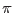

XMM-Newton Science Analysis System
selectlib (selectlib-4.74.1) [xmmsas_20170112_1337-16.0.0]
Identifiers are alphanumeric strings which can contain letters, digits
and the underscore character (_). They must start with a letter --
case is significant. An identifier must match a name of an existing
column in the input table unless it is prefixed by a hash mark (#).
In this case it must match any of the above names for symbolic constants
or is otherwise interpreted as a reference to a
to numerical or textual attribute in the currently processed table.
The identifier #ROW has a special meaning: It stands for
the current row number (starting from one) in the processed table.
Examples: #PI (the numerical value of ),
#ROW (the current row number),
ROWPI (a table column with name ROWPI),
#ROWPI (value of the numerical attribute ROWPI).
XMM-Newton SOC/SSC -- 2017-01-12